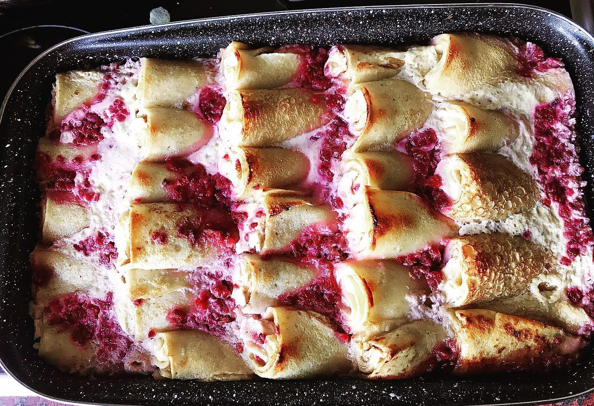

Zapekané palacinky s tvarohom podľa @cili_papricka_v_kuchyni — Normy Jedál
Zapekane palacinky, pokus c. 2. Vytunene malinami a zamena z hrudkoveho na jemny tvaroh. S vanilkovym cukrom, vanilinovy nepouzivam. Boli dokonalejsie 🥰 #zapekanepalacinky #zapekanepalacinkystvarohom #dnesnyobed #varimslaskou